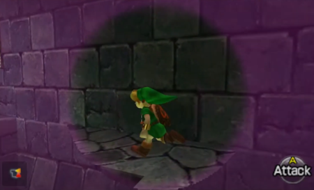

Ultraviolet Lights & Invisible Ink
Intro
Lately I’ve been thinking about effects that involve revealing hidden objects (especially decals)
I’ve collected some examples from various games :
-
Fingerprints/Handprints in ghost-hunting or detective games, simulating Ultraviolet Lights.
- Phasmophobia and Shadows of Doubt come to mind. These games could use the light attenuation in the decal shader as an alpha mask - so outside of the light, the decal is invisible.
- I’m also aware there may have been changes to Phasmophobia’s Ultraviolet lights which involves the decals being visible for a short duration even after turning off the light, so there’s likely CPU side calculations happening instead - probably involving signed distance fields (SDFs) and raycasts, then passing visibility/alpha values to shader (e.g. for URP Decal Projector can adjust properties via the MaterialPropertyBlock it uses). But anyway, I want to focus on gpu-side approaches so won’t be going through that in this post.
- SDFs could potentially also work on the GPU/shader side if light data is unavaliable - but since I’m using URP this isn’t much of a problem. That approach also wouldn’t really account for shadows. (Though that might not be noticeable if light source is camera?)
-
Some tool (usually a lens) that reveals hidden symbols/messages
- A few games in the Legend of Zelda series have a “Lens of Truth”. When active it tints the outer parts of the screen, leaving a circular portion untinted. Inside this, hidden/invisible objects are shown and fake walls/floor disappear.
Lens of Truth, revealing a hidden path to walk across. From Ocarina of Time 3D
- While the tint has a bit of gradient/falloff, the actual objects get cut off instantly, suggesting Stencil operations are involved (as these don’t allow for partial transparency). However it would also be possible to calculate a screenspace mask in the shader, which could provide a softer transition for transparent objects. And for opaque objects, that could be paired with dithering & alpha clipping to fake the transparency (though that is a bit more expensive to render)
- Similarly, The Room series of puzzle games has an “Eyepiece” that reveals decals. As well as having some special surfaces disappear when viewed through it.
- But as the effect here always covers the entire screen (cannot see outside of the lens circle) there’s no stencils or masking needed. It’s actually just a toggle, e.g. of a global keyword or float property used by the decal shader - but more likely, enabling/disabling the objects themselves so there is less overdraw when the eyepiece isn’t active.
- Bendy And The Ink Machine also has many hidden message decals (as well as a couple meshes and some particles) revealed by a “Seeing Tool” obtained near the end of the game (and can be used in a second playthrough)
- These decals are masked to only appear through it’s rectangular shape, and as the tool is animated, it’s likely stencils are involved again here.
This post will provide example shaders/graphs of how to achieve effects similar to these. The concepts may translate to other pipelines but there is a heavy focus on the Universal Render Pipeline, the Decal Renderer Feature & Projectors and uses the Decal Graph.
Inital Decal Graph
For all the methods shown below, we’ll start by creating a basic Decal Graph.
We want a Texture2D property for the decal texture, use Sample Texture 2D on it, and connect the RGBA output to Base Color in the Master Stack. We can also provide a Color property for Emission (preferably with HDR enabled under Node Settings while property is selected).
A Multiply node is used on the alpha channel of the texture before connecting to the Alpha. The B input of this will be where we handle the visibility of the decal - such as using light attenuation or some other mask. This will be where graphs below should connect - though you may also want to Saturate before that to keep alpha values in a 0-1 range!
Feel free to also use Normals, MAOS (metallic, AO, smoothness) if required.
Ultraviolet Lights
This method works best when the Decal Renderer Feature is set to Screen Space mode. (Or if you handle your own decals by rendering meshes after opaques and project the texture onto surfaces by reconstructing world positions from the depth texture, which is essentially the same idea).
In “DBuffer” mode it has some issues… the foldout below has more details if interested.
In this mode the decal itself does not typically handle shading. They instead are rendered as unlit into separate buffer(s), then sampled by opaque surfaces later which applies the shading. The decal shader pass that is used isn’t set up to properly handle lighting.
But during testing, I did find a workaround for the Forward+ path (untested in builds though), which involves manually adding keywords to the graph (though this does cause some warnings about duplicate keywords). Can do this either through the Blackboard or by adding these lines to the hlsl include file that we’ll set up below (this also creates warnings about unknown pragmas, but still works - a bit odd)
#pragma multi_compile _ _ADDITIONAL_LIGHTS
#pragma multi_compile_fragment _ _ADDITIONAL_LIGHT_SHADOWS
#pragma multi_compile _ _FORWARD_PLUS
If you want to avoid any warnings, you’d probably have to convert the graph to code and add the keywords to the correct Pass instead. (Frame Debugger should tell you which pass is being used. Otherwise just make sure all passes have those keywords once)
Adding these keywords is enough in the Forward+ path, but for the regular Forward path it appears that unity_LightData and unity_LightIndices are not being set during decal rendering in DBuffer mode, so afaik not possible to get working for that rendering path. If you require Forward, use Screenspace decals instead.
The aim here is to make our decals appear only when spot or point lights shine on them -
To read light data in URP & Shader Graph we’ll need a Custom Function node.
It’s likely that you may have other lights in the scene and only want specific lights to affect the decals in this way, so will also need a way to determine which light is which. There’s a few ways we could handle this, in particular - by comparing the light colour to a specific value, or using the Rendering Layers set on the Light component. Will explain both these options below.
half4(1,1,1,1). I’m unsure if it’s important, but if you need to support the Shadowmask Baked GI mode for the decals, you’ll want to provide it as an input param to the function (half4 Shadowmask before the out param) and connect the Sample Shadowmask subgraph from my Custom Lighting repo to that port.
Using Light Colour
A relatively simple way to determine which lights should reveal decals is by it’s colour. Ultraviolet lights are typically purplish, but let’s assume it could be any specific colour - and pass it into the function as a parameter to avoid hardcoding it.
To compare against that colour, we can take the distance() between it and the light’s colour, then compare that distance against some max value (named Range here)
|
|
In the graph, connect a Position node to the WorldPosition port, a Color node to the Color port, and set Range to 0.5. (Or use Color and Float properties to be able to control these from the Material)
Using Light Layers
URP 2022.2+ introduced Rendering Layers. They have a few uses, but importantly they can be set for each Light, where the intended use is to make it possible for lights to affect certain meshes. Afaik that doesn’t really apply to decals though, as the Decal Projector component uses the same rendering layers to determine which surfaces they should project onto. But anyway, the light layer masks are still available in the shader.
I believe Rendering Layers should be enabled by default, but you might want to double-check that is the case on each URP Asset (it’s under Lighting heading - but may need to click the 3 dots on the right and “Show Additional Properties” to actually show it)
Under the URP Global Settings (can be found under Project Settings) we can configure these layers. By having two rendering layers, e.g. “Default” (Index 0) and “Ultraviolet” (Index 1) we can set any Lights that should reveal decals to use both these layers, while regular lights should only use the Default one. This should work fine even if there are other layers too, if you need them for other uses.
One disadvantage of this approach is that newly created lights always use all layers - so we have to remember to change it!
In the function, we use IsMatchingLightLayer(light.layerMask, X). We’d normally use GetMeshRenderingLayer() as the second param to compare the rendering layer mask of the Light and MeshRenderer components, but here we just want to know if the Light has the “Ultraviolet” layer active, so need to use 1 << layerIndex.
layerIndex here will be 1 in my case, but rather than hardcoding values, I’ve passed in the layer index as an input param so it can be set from the graph.
|
|
In the graph, connect a Position node to the WorldPosition port, and set LayerIndex to 1 (assuming “Ultraviolet” is Layer 1) or use a Float Property if you want to control the value from the Material. (Ideally also set the mode on that property to Integer under Node Settings while property is selected)
Special Lens
Using Screenspace Circular Mask
While the intro examples don’t use this, it would be possible for our decals to calculate their visibility based their position on the screen. By comparing with a screenspace mask, they could appear only when inside a circle - and can provide a soft transition, unlike a stencil approach.
As we’re using Screen Position and the screen aspect ratio isn’t necessarily square, the resulting circle would be stretched. To fix this, we can use a ratio of the Screen Width and Height to scale the coordinates, as shown below.
By using the Center mode on the Screen Position (and Center of (0, 0) on the Sphere Mask) we ensure the circle stays in the center of the screen.
In the above, I’ve used the Sphere Mask node which handles the circle calculations for us, while providing a soft falloff (unlike the Ellipse node). Alternatively, below shows what this is doing :
This kind of method could work for other shapes too by swapping the Circle SDF group out for a different function, see Inigo Quilez’s article on 2D SDFs. Can replicate those in nodes, or convert the code to HLSL and use a Custom Function
With just this masking in the decal shader, it may be difficult to see when the lens is actually active - so you may want to match this up with some kind of Lens Mesh, UI or Fullscreen effect (e.g. using this same circular mask inside a Fullscreen Graph to tint screen like the Lens of Truth does)
Using Stencils
While the above is good for a static lens that stays attached to the screen center, it may be difficult to use that method if the lens is an animated mesh or of a more complex shape that can’t be easily replicated in SDFs. In these cases, Stencil operations may work better.
In short, the process is :
- We render our lens mesh to the Stencil Buffer, which stores integer values (from 1 to 255) for each pixel.
- Then when rendering pixels of other objects (like our decals) they can test against this buffer using comparisons like Less, Greater, Equals, NotEqual, etc. Any pixels that pass the test are drawn, and any that fail are discarded.
This approach is a bit convoluted when using Shader Graph, since it doesn’t actually have proper support for adjusting these stencil values, but there are workarounds.
As render order is important, this method seems to only work correctly when the Decal Renderer Feature is set to Screen Space mode. (Or if you handle your own decals by rendering meshes after opaques and project them onto surfaces by reconstructing world positions from the depth texture, which is essentially the same idea)
(Technically it should be possible even in DBuffer mode, but it seems there’s some depth/stencil buffer copying/clearing going on which is messing with things)
Rendering the Lens with Stencil
You’ll need some kind of mesh to use as a lens - in my case I used a magnifying glass split into two submeshes (to apply separate materials to the handle and glass). Only the glass part is actually important here.
To make this render to the stencil buffer, we can either :
-
Put it on a new Layer (e.g. named “Lens”, regular physics layer that is - not a rendering layer one). Remove that layer from the default Transparent Layer Mask at the top of the Universal Renderer asset. Then use a RenderObjects feature to render this in the After Rendering Opaques event, filtered to Transparents & using that layer and overriding Stencil :
Value = 1, Compare = Always, Pass = Replace
-
Since it’s likely there’s only one lens, using an entire layer might not be ideal. So alternatively, we could clone the GameObject and use a Material with the following shader (probably requires the lens/glass to be a separate mesh, as we don’t really want to render the handle in this way)
- The shader will draw it to the stencil buffer only (not depth or colour buffers) :
|
|
In the above shader I’ve hardcoded a value of 1, but if you prefer it’s also possible to use properties to adjust the stencil (and other ShaderLab functions) from the Material - see FAQ : Using properties with ShaderLab operations.
Note if you have other features using stencils, you may need use a different value or additionally make use of the ReadMask/WriteMask to avoid the features interfering with eachother.
Rendering Objects/Decals with Stencil
For regular meshes, we can use stencil overrides on the RenderObjects feature again :
Value = 1, Compare = Equal(orNotEqualif they should be hidden by lens)
But this doesn’t work for Decal Projectors as they are already rendered using a different feature
- It might be possible to write a custom version of the Decal Renderer Feature, that additionally draws decals on a specific layer using a StateBlock that overrides the stencil values. (Could even be possible to get it working with DBuffer mode as well). But writing a custom version of the feature is quite a bit beyond the scope of this tutorial.
- Or we can convert our Decal Graph to shader code (steps will be explained below), which would allow us to manually add the
Stencil{}block under the SubShader. But a disadvantage is if we need to make changes to the graph, we must do this again.
While the graph asset is selected in the Project window, the Inspector will have buttons at the top of the asset to show the generated shader code.
Once open, you can move the file from the temporary folder (or File → Save As…) into your assets. Close the file and reopen the one in your assets.
We can insert our Stencil block in the SubShader (after it’s Tags), before the first Pass. It’ll look something like this :
...
SubShader
{
Tags
{
...
}
// ---- start of edits to generated code ----
Stencil
{
Ref 1
Comp Equal
}
// ---- end of edits to generated code ----
Pass
{
...I’d also recommend changing the name of the shader, from Shader Graphs/Decal to something like Generated From Graph/Decal so it’s clear which version is which on the Shaders dropdown. Create a Material using this new shader.
Any decals using this material should now only be drawn through the lens. (Or can use NotEqual comparison for objects that should be hidden by the lens)
Thanks for reading! 😊
If this post helped, consider sharing a link with others!